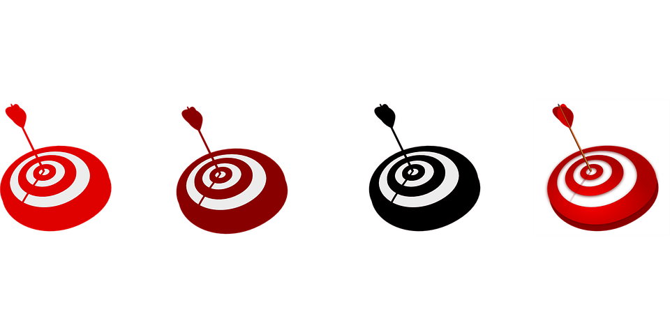

Nos encontramos en el área de “Conocimiento de sí mismo y autonomía personal” y en el bloque de contenidos “El cuerpo y la propia imagen”.
El objetivo general que queremos trabajar con nuestro alumnado, del tercer nivel del segundo ciclo de EI es: Conocer las características propias de las diferentes partes del cuerpo y respetar las diferencias.
Respecto a los objetivos didácticos cabe destacar los siguientes:
Conocimiento de sí mismo y autonomía personal:
- Identificar características diferenciales de las personas según el sexo.
- Adquirir una progresiva coordinación y control de las habilidades manipulativas y utilizar los utensilios de forma adecuada.
- Valorar la importancia de mantener una buena salud.
- Adquirir hábitos de esfuerzo y constancia.
- Realizar de forma autónoma actividades de ayuda y colaboración.
Conocimiento del medio físico, natural, social y cultural:
- Reconocer cualidades de las personas según la observación directa e indirecta.
- Integrar la riqueza que supone la diversidad de culturas.
- Adquirir a través de los demás una progresiva autonomía personal.
- Conocer y representar a partir de formas geométricas.
Los lenguajes: comunicación y representación:
- Ampliar el vocabulario referido al cuerpo.
- Verbalizar ideas, sentimientos, deseos a partir del lenguaje.
- Desarrollar la creatividad a través de la expresión plástica.
- Mostrar interés y sensibilidad por el lenguaje audiovisual.
- Representar sentimientos propios o ajenos.
- Discriminar sonidos asociados a diferentes partes del cuerpo.

Imagen 3 ( Google: Herramientas: Etiquetada para reutilización)